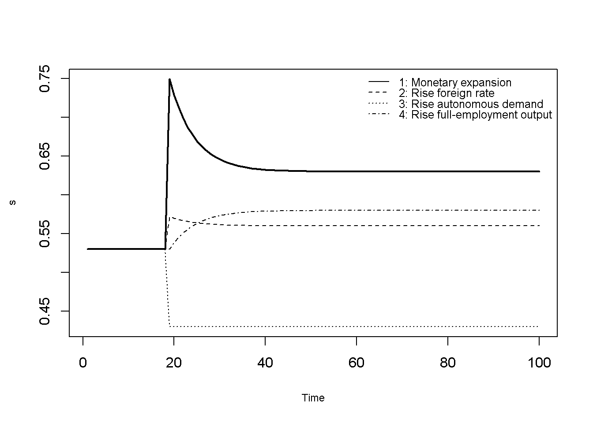
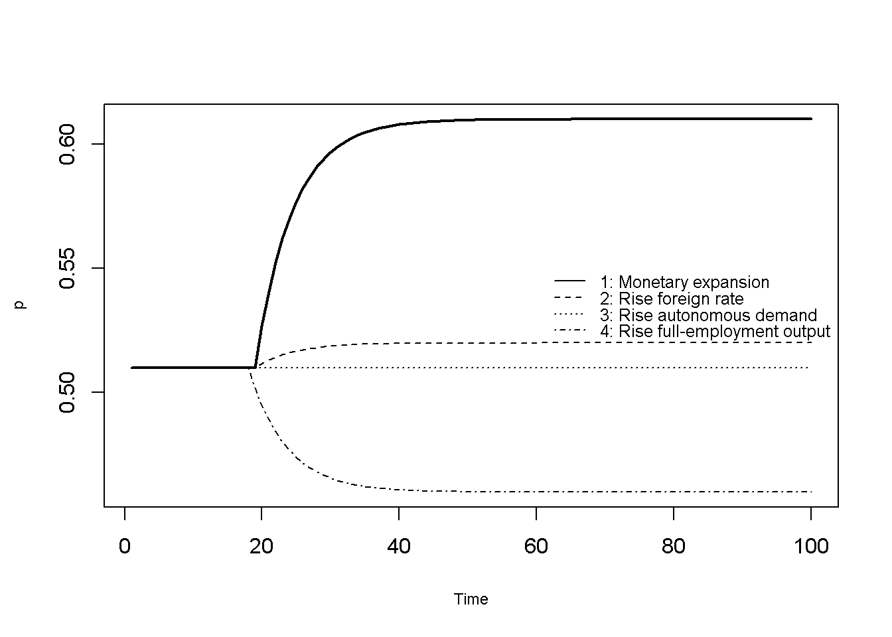
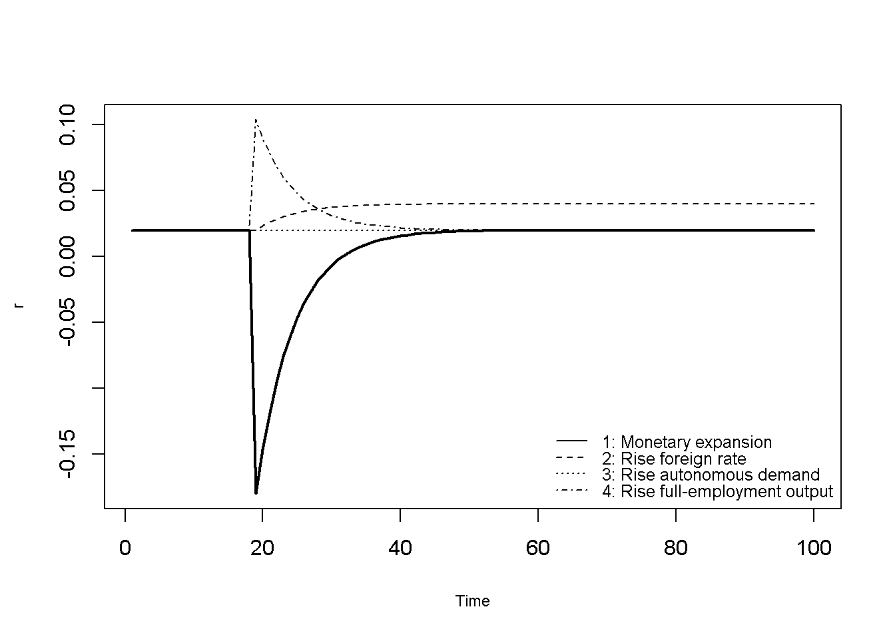
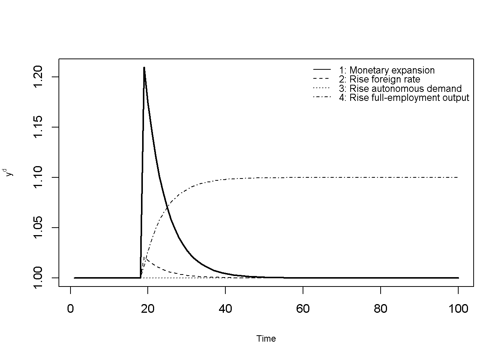
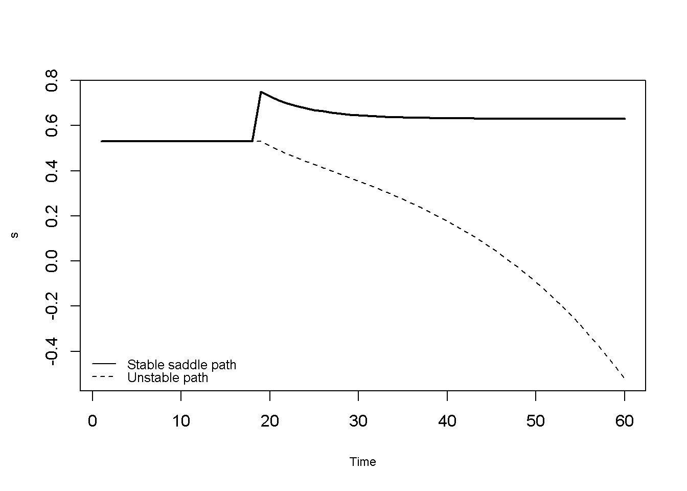

#Clear the environment
rm(list=ls(all=TRUE))
#Set number of periods
Q = 500
# Set number of scenarios
S=4
# Set period in which exogenous shift will occur
q=20
#Create (S x Q) matrices in which equilibrium solutions from different parameterisations will be stored
p=matrix(data=0,nrow=S,ncol=Q) # (log) price level
r=matrix(data=0,nrow=S,ncol=Q) # domestic interest rate
s=matrix(data=0,nrow=S,ncol=Q) # (log) nominal exchange rate
ad=matrix(data=0,nrow=S,ncol=Q) # (log) aggregate demand
#Set constant parameter values
lambda=0.5 # interest semi-elasticity of money demand
phi=0.5 # income elasticity of money demand
delta=0.5 # elasticity of demand wrt real exchange rate
gamma=0.5 # elasticity of demand wrt full-employment output
sigma=0.5 # interest semi-elasticity of demand
pi=0.8 # adjustment speed of prices
d=0.1 # time increment
# Set and initialise exogenous variables/parameters that will be shifted
m=matrix(data=1,nrow=S,ncol=Q) # (log) money supply
r_f=matrix(data=0.02,nrow=S,ncol=Q) # foreign interest rate
mu=matrix(data=0.5,nrow=S,ncol=Q) # autonomous demand
y_eq=matrix(data=1,nrow=S,ncol=Q) # (log) full-employment output
# Set parameter values for different scenarios
m[1,q:Q]=1.1 # scenario 1: monetary expansion
r_f[2,q:Q]=0.04 # scenario 2: rise in foreign interest rate
mu[3,q:Q]=0.55 # scenario 3: rise in autonomous demand
y_eq[4,q:Q]=1.1 # scenario 4: rise in full-employment output
# Compute long-run equilibrium values
p_eq = m - phi*y_eq + lambda*r_f
s_eq = p_eq + ((1-gamma)*y_eq + sigma*r_f - mu)/delta
# Set up Jacobian matrix of the system in (s, p)
J=matrix(c(0, 1/lambda,
pi*delta, -pi*(delta+sigma/lambda)), 2, 2, byrow=TRUE)
# Obtain eigenvalues and save the negative (stable) root
ev=eigen(J)
root = Re(ev$values[Re(ev$values) < 0])
# Initialise endogenous variables at equilibrium values
p[,1]=p_eq[,1]
r[,1]=r_f[,1]
s[,1]=s_eq[,1]
ad[,1]=y_eq[,1]
# Simulate the model by looping over Q time periods for S different scenarios
for (i in 1:S){
for (t in 2:Q){
#(1) Price dynamics
p[i,t] = p[i,t-1] + pi*(ad[i,t-1] - y_eq[i,t])*d
#(2) Exchange rate on the saddle path
s[i,t] = s_eq[i,t] + (p[i,t] - p_eq[i,t])/(lambda*root)
#(3) Money market equilibrium, solved for r
r[i,t] = (p[i,t] - m[i,t] + phi*y_eq[i,t])/lambda
#(4) Aggregate demand
ad[i,t] = mu[i,t] + delta*(s[i,t] - p[i,t]) + gamma*y_eq[i,t] - sigma*r[i,t]
} # close time loop
} # close scenarios loop20 A Dornbusch Exchange Rate Overshooting Model
Overview
The Dornbusch (1976) exchange overshooting model aim to explains why flexible exchange rates are so much more volatile than the fundamentals that are supposed to drive them.1 Its key idea is that asset markets and goods markets adjust at different speeds. The exchange rate is an asset price that can jump instantly in response to shocks, whereas goods prices are sticky and adjust only gradually. Under rational expectations, an unanticipated permanent shock such as a monetary expansion will lead to a depreciation of the exchange rate by more than its new equilibrium – it ‘overshoots’ – and then gradually appreciates towards its new long-run value.
The mechanism works as follows. A rise in the money supply lowers the domestic interest rate (as long as prices have not yet adjusted). With perfect capital mobility, investors will only hold domestic bonds that pay a lower interest rate than foreign bonds if they expect the domestic currency to appreciate over time, thereby compensating them for the interest rate differential. Since the exchange rate must eventually depreciate one-for-one with the money supply, the only way for investors to rationally expect an appreciation is for the exchange rate to initially depreciate beyond its new long-run level.
The model is a hybrid of Keynesian short-run and monetarist long-run features with rational expectations. From a dynamic point of view, the model is described by two differential equations, one for the price level and one for the exchange rate. However, only the price level is a genuine state variable: it is predetermined at any point in time. The exchange rate, by contrast, is a forward-looking ‘jump variable’ that can take any value at any moment. As we will see, the model’s equilibrium is a saddle point. Rational expectations select the unique path that converges to the long-run equilibrium.
The model’s use of the jump variable technique to derive a path for the exchange rate that brings the economy back to an otherwise unstable equilibrium is paradigmatic for contemporary macroeconomic models with rational expectations.2 This chapter explains the link between rational expectations and jump variables in detail and shows how these types of models can be simulated numerically. We consider a continuous-time version of the model as presented in Dornbusch (1976) and Gandolfo and Federici (2016).
The Model
The following equations describe the model:
\[ \dot{p}_t = \pi (y^d_t - \bar{y}) \tag{20.1}\]
\[ s_t = \bar{s} + \frac{p_t-\bar{p}}{\lambda \rho_1} \tag{20.2}\]
\[ r_t = \frac{p_t - m + \phi \bar{y}}{\lambda} \tag{20.3}\]
\[ y^d_t = \mu + \delta (s_t - p_t) + \gamma \bar{y} - \sigma r_t, \tag{20.4}\]
where \(p\), \(s\), \(r\), and \(y^d\) are the endogenous variables: the (log) domestic price level, the (log) nominal exchange rate (defined as the domestic price of foreign currency, so that an increase represents a depreciation), the domestic interest rate, and (log) aggregate demand, respectively. The (log) money supply \(m\), (log) full-employment output \(\bar{y}\), the foreign interest rate \(r_f\), and autonomous demand \(\mu\) are exogenous. \(\bar{s}\) and \(\bar{p}\) denote the long-run values of the exchange rate and the price level, and \(\rho_1<0\) is the negative eigenvalue of the model’s dynamic system; all of which are derived below. A dot over a variable represents the derivative with respect to time \((\dot{x}=\frac{d x}{d t})\).
By Equation 20.1, the price level \(p\) rises sluggishly whenever aggregate demand \(y^d\) exceeds full-employment output \(\bar{y}\), and falls whenever it is below. The parameter \(\pi\) captures the speed of price adjustment. This is the key nominal rigidity in the model: the price level \(p\) cannot jump to clear the goods market instantaneously.
Equation 20.2 specifies the behaviour of the nominal (spot) exchange rate \(s\). To understand this equation, we need to briefly explain how it is derived; a detailed treatment follows in the analytical discussion below. The starting point for exchange rate dynamics in this model is the uncovered interest parity (UIP) condition \(E[\dot{s}_t] = r_t - r_f\). Investors can hold domestic bonds yielding \(r\), or foreign bonds yielding \(r_f\) plus the expected rate of depreciation of the domestic currency \(E[\dot{s}_t]\). Under perfect capital mobility, arbitrage equates the two returns. Combined with the assumption of rational expectations, which in a deterministic model like this one implies perfect foresight \((E[\dot{s}_t]=\dot{s}_t)\), this yields: \[ \dot{s}_t = r_t - r_f. \tag{UIP} \] Thus, if the domestic interest rate is below the foreign rate, the domestic currency must gradually appreciate \((\dot{s}<0)\).
As will be shown in detail below, the model with the UIP equation for the exchange rate is not stable in the usual sense: its equilibrium is a saddle point. Starting from an arbitrary combination of the price level and the exchange rate, the economy will generally diverge explosively from the equilibrium. Put differently, there are infinitely many paths that satisfy the UIP condition, but only one of them converges to the long-run equilibrium: the ‘stable arm’ of the saddle, which is given by Equation 20.2. Economically, the assumption is that under rational expectations agents rule out the unstable paths, so that the exchange rate jumps onto the stable arm whenever an unanticipated shock occurs and then moves along it. Equation 20.2 thus determines the level of the exchange rate at every point in time, while satisfying the UIP condition.
Equation 20.3 is the money market equilibrium condition \(m - p_t = -\lambda r_t + \phi \bar{y}\) solved for the domestic interest rate \(r\). The demand for real money balances \(m-p\) increases with full-employment output and decreases with the interest rate, where \(\phi\) and \(\lambda\) are the income elasticity and the interest semi-elasticity of money demand, respectively. The money market clears instantaneously, so that the interest rate always adjusts to equate money demand with the exogenous money supply.
Equation 20.4 specifies aggregate demand, which depends positively on autonomous demand \(\mu\) (e.g. fiscal policy), positively on the real exchange rate \(s-p\) (such that a real depreciation stimulates net export demand),3 positively on full-employment output (with \(0<\gamma<1\)), and negatively on the interest rate.
Long-run equilibrium
To simulate the model, we first need the long-run equilibrium values of the price level and the exchange rate that appear in Equation 20.2. In the long-run equilibrium, the price level and the exchange rate are constant (\(\dot{p}=\dot{s}=0\)). From the UIP condition, it then follows that the domestic interest rate equals the foreign rate: \(\bar{r}=r_f\). Substituting this into Equation 20.3 and solving for \(p\) yields the long-run price level:
\[ \bar{p}=m-\phi\bar{y}+\lambda r_f. \tag{20.5}\]
The long-run price level is determined in the money market. It rises with the money supply and the foreign interest rate (which lowers money demand), and falls with full-employment output (which raises money demand).
From Equation 20.1, \(\dot{p}=0\) requires \(y^d=\bar{y}\). Substituting this and \(r=r_f\) into Equation 20.4 and solving for \(s\) yields the long-run exchange rate: \[ \bar{s}=\bar{p}+\frac{(1-\gamma)\bar{y}+\sigma r_f - \mu}{\delta}. \tag{20.6}\]
The second term in Equation 20.6 is the long-run real exchange rate \(\bar{s}-\bar{p}\), which ensures that aggregate demand equals full-employment output. It does not depend on the money supply. In the long run, money is neutral: a permanent increase in the money supply raises the price level and depreciates the exchange rate by the same proportion \((\frac{d\bar{p}}{dm}=\frac{d\bar{s}}{dm}=1)\), but has no effect on the real exchange rate and real output.
Simulation
Parameterisation
Table 1 reports the parameterisation used in the simulation. We consider four scenarios. In scenario 1, the money supply \(m\) increases (a monetary expansion). In scenario 2, the foreign interest rate \(r_f\) rises. In scenario 3, autonomous demand \(\mu\) increases (e.g. due to a fiscal expansion). In scenario 4, full-employment output \(\bar{y}\) rises. The model is initialised at the long-run equilibrium of the initial parameterisation and the various shifts then occur in period 20.
Table 1: Parameterisation
| Scenario | \(m\) | \(r_f\) | \(\mu\) | \(\bar{y}\) | \(\lambda\) | \(\phi\) | \(\delta\) | \(\gamma\) | \(\sigma\) | \(\pi\) |
|---|---|---|---|---|---|---|---|---|---|---|
| 1: monetary expansion (\(m\)) | 1.1 | 0.02 | 0.5 | 1 | 0.5 | 0.5 | 0.5 | 0.5 | 0.5 | 0.8 |
| 2: rise in foreign interest rate (\(r_f\)) | 1 | 0.04 | 0.5 | 1 | 0.5 | 0.5 | 0.5 | 0.5 | 0.5 | 0.8 |
| 3: rise in autonomous demand (\(\mu\)) | 1 | 0.02 | 0.55 | 1 | 0.5 | 0.5 | 0.5 | 0.5 | 0.5 | 0.8 |
| 4: rise in full-employment output (\(\bar{y}\)) | 1 | 0.02 | 0.5 | 1.1 | 0.5 | 0.5 | 0.5 | 0.5 | 0.5 | 0.8 |
Simulation code
NotePython code
import numpy as np
# Set number of periods
Q = 500
# Set number of scenarios
S = 4
# Set period in which exogenous shift will occur
q = 20
# Create (S x Q) arrays in which equilibrium solutions from different parameterisations will be stored
p = np.zeros((S, Q)) # (log) price level
r = np.zeros((S, Q)) # domestic interest rate
s = np.zeros((S, Q)) # (log) nominal exchange rate
ad = np.zeros((S, Q)) # (log) aggregate demand
# Set constant parameter values
lam = 0.5 # interest semi-elasticity of money demand
phi = 0.5 # income elasticity of money demand
delta = 0.5 # elasticity of demand wrt real exchange rate
gamma = 0.5 # elasticity of demand wrt full-employment output
sigma = 0.5 # interest semi-elasticity of demand
pi = 0.8 # adjustment speed of prices
d = 0.1 # time increment
# Set and initialise exogenous variables/parameters that will be shifted
m = np.full((S, Q), 1.0) # (log) money supply
r_f = np.full((S, Q), 0.02) # foreign interest rate
mu = np.full((S, Q), 0.5) # autonomous demand
y_eq = np.full((S, Q), 1.0) # (log) full-employment output
# Set parameter values for different scenarios (Python indices start at 0)
m[0, q-1:] = 1.1 # scenario 1: monetary expansion
r_f[1, q-1:] = 0.04 # scenario 2: rise in foreign interest rate
mu[2, q-1:] = 0.55 # scenario 3: rise in autonomous demand
y_eq[3, q-1:] = 1.1 # scenario 4: rise in full-employment output
# Compute long-run equilibrium values
p_eq = m - phi*y_eq + lam*r_f
s_eq = p_eq + ((1-gamma)*y_eq + sigma*r_f - mu)/delta
# Set up Jacobian matrix of the system in (s, p)
J = np.array([[0, 1/lam],
[pi*delta, -pi*(delta + sigma/lam)]])
# Obtain eigenvalues and save the negative (stable) root
eigvals = np.linalg.eigvals(J)
root = np.real(eigvals[np.real(eigvals) < 0])[0]
# Initialise endogenous variables at equilibrium values
p[:, 0] = p_eq[:, 0]
r[:, 0] = r_f[:, 0]
s[:, 0] = s_eq[:, 0]
ad[:, 0] = y_eq[:, 0]
# Simulate the model by looping over Q time periods for S different scenarios
for i in range(S):
for t in range(1, Q):
# (1) Price dynamics
p[i, t] = p[i, t-1] + pi*(ad[i, t-1] - y_eq[i, t])*d
# (2) Exchange rate on the saddle path
s[i, t] = s_eq[i, t] + (p[i, t] - p_eq[i, t])/(lam*root)
# (3) Money market equilibrium, solved for r
r[i, t] = (p[i, t] - m[i, t] + phi*y_eq[i, t])/lam
# (4) Aggregate demand
ad[i, t] = mu[i, t] + delta*(s[i, t] - p[i, t]) + gamma*y_eq[i, t] - sigma*r[i, t]Plots
Figure 20.1, Figure 20.2, Figure 20.3, and Figure 20.4 depict the response of the exchange rate, the price level, the interest rate, and aggregate demand to changes in the exogenous variables.
In the first scenario (solid line), the money supply increases permanently by 10%. In the long run, the price level and the exchange rate both rise by 10%, so that money is neutral. In the short run, however, the price level is sticky. Real money balances rise, and the domestic interest rate has to fall to clear the money market. As the domestic interest rate is now below the foreign rate, investors require an expected appreciation of the domestic currency. The exchange rate therefore depreciates by more than its long-run depreciation on impact and then gradually appreciates towards its new long-run value. The real depreciation (together with the lower interest rate) raises aggregate demand above full-employment output, which gradually pushes up the price level. As real money balances shrink, the interest rate rises back to the foreign rate.
In the second scenario (dashed line), the foreign interest rate rises from 2% to 4%. This raises the long-run price level, because a higher interest rate lowers the demand for real money balances, and it raises the long-run exchange rate by even more, because a real depreciation is required to offset the negative effect of the higher interest rate on aggregate demand. As the price level cannot jump, the domestic interest rate initially remains at 2%, i.e. below the new foreign rate. As in the first scenario, the exchange rate therefore overshoots its new long-run value.
# Set maximum period for plots
Tmax=100
# Exchange rate
plot(s[1, 2:(Tmax+1)], type="l", col=1, lwd=2, lty=1, font.main=1,cex.main=1,
ylab = 's',xlab = 'Time',ylim=range(max(s[, 2:Tmax]),min(s[, 2:Tmax])),cex.axis=1,cex.lab=0.75)
lines(s[2, 2:(Tmax+1)],lty=2)
lines(s[3, 2:(Tmax+1)],lty=3)
lines(s[4, 2:(Tmax+1)],lty=4)
legend("topright", legend=c("1: Monetary expansion", "2: Rise foreign rate", "3: Rise autonomous demand", "4: Rise full-employment output"),
lty=1:4, cex=0.8, bty = "n", y.intersp=0.8)
# Price level
plot(p[1, 2:(Tmax+1)], type="l", col=1, lwd=2, lty=1, font.main=1,cex.main=1,
ylab = 'p',xlab = 'Time',ylim=range(max(p[, 2:Tmax]),min(p[, 2:Tmax])),cex.axis=1,cex.lab=0.75)
lines(p[2, 2:(Tmax+1)],lty=2)
lines(p[3, 2:(Tmax+1)],lty=3)
lines(p[4, 2:(Tmax+1)],lty=4)
legend("right", legend=c("1: Monetary expansion", "2: Rise foreign rate", "3: Rise autonomous demand", "4: Rise full-employment output"),
lty=1:4, cex=0.8, bty = "n", y.intersp=0.8)
# Interest rate
plot(r[1, 2:(Tmax+1)], type="l", col=1, lwd=2, lty=1, font.main=1,cex.main=1,
ylab = 'r',xlab = 'Time',ylim=range(max(r[, 2:Tmax]),min(r[, 2:Tmax])),cex.axis=1,cex.lab=0.75)
lines(r[2, 2:(Tmax+1)],lty=2)
lines(r[3, 2:(Tmax+1)],lty=3)
lines(r[4, 2:(Tmax+1)],lty=4)
legend("bottomright", legend=c("1: Monetary expansion", "2: Rise foreign rate", "3: Rise autonomous demand", "4: Rise full-employment output"),
lty=1:4, cex=0.8, bty = "n", y.intersp=0.8)
# Aggregate demand
plot(ad[1, 2:(Tmax+1)], type="l", col=1, lwd=2, lty=1, font.main=1,cex.main=1,
ylab = expression(y^d),xlab = 'Time',ylim=range(max(ad[, 2:Tmax]),min(ad[, 2:Tmax])),cex.axis=1,cex.lab=0.75)
lines(ad[2, 2:(Tmax+1)],lty=2)
lines(ad[3, 2:(Tmax+1)],lty=3)
lines(ad[4, 2:(Tmax+1)],lty=4)
legend("topright", legend=c("1: Monetary expansion", "2: Rise foreign rate", "3: Rise autonomous demand", "4: Rise full-employment output"),
lty=1:4, cex=0.8, bty = "n", y.intersp=0.8)
NotePython code
import matplotlib.pyplot as plt
# Set maximum period for plots
Tmax = 100
labels = ["1: Monetary expansion", "2: Rise foreign rate",
"3: Rise autonomous demand", "4: Rise full-employment output"]
styles = ["-", "--", ":", "-."]
# Plot exchange rate, price level, interest rate, and aggregate demand
for var, name in [(s, "s"), (p, "p"), (r, "r"), (ad, "$y^d$")]:
for i in range(S):
plt.plot(var[i, 1:Tmax+1], linestyle=styles[i], color="black",
linewidth=2 if i == 0 else 1, label=labels[i])
plt.xlabel("Time")
plt.ylabel(name)
plt.legend(frameon=False, fontsize=8)
plt.show()In the third scenario (dotted line), autonomous demand rises. This leaves the long-run price level unaffected (as it is determined in the money market) but leads to a long-run real appreciation that crowds out net exports by exactly the increase in autonomous demand. Since the price level does not need to adjust, there is no disequilibrium in the goods or money market at the initial price level. The exchange rate thus jumps immediately to its new long-run value without any overshooting, and there are no further dynamics.
In the fourth scenario (dash-dotted line), full-employment output increases. This raises the demand for money and thus lowers the long-run price level, while a real depreciation is required to create the demand for the additional output. With a sticky price level, the higher demand for money initially pushes the domestic interest rate above the foreign rate, which must be matched by an expected depreciation.
Rational Expectations and the Saddle Path
The simulations above rest on the assumption that the exchange rate always lies on the stable saddle path given by Equation 20.2. This section explains how this assumption is linked to rational expectations.4
The dynamic system
The model can be reduced to a system of two linear differential equations in \(s\) and \(p\). Combining the UIP condition \(\dot{s}_t = r_t - r_f\) with Equation 20.3 gives \(p_t - m =\lambda \dot{s}_t + \lambda r_f - \phi \bar{y}\). Solving for \(\dot{s}_t\) gives:
\[ \dot{s}_t = \frac{p_t - m + \phi \bar{y}}{\lambda} - r_f \tag{20.7}\]
Similarly, substituting Equation 20.3 into Equation 20.4 gives aggregate demand as a function of \(s\) and \(p\) only: \(y^d_t = \mu + \delta(s_t - p_t) + \gamma \bar{y} - \sigma\left(\frac{p_t - m + \phi \bar{y}}{\lambda}\right)\). Substituting this expression into Equation 20.1 gives:
\[ \dot{p}_t = \pi\left[\mu + \delta(s_t - p_t) + \gamma \bar{y} - \sigma\frac{p_t - m + \phi \bar{y}}{\lambda} - \bar{y}\right]. \tag{20.8}\]
The Jacobian matrix of this system is: \[ J(s, p)=\begin{bmatrix} 0 & \frac{1}{\lambda} \\ \pi\delta & -\pi\left(\delta+\frac{\sigma}{\lambda}\right) \end{bmatrix}, \] with determinant \(det(J) = -\frac{\pi\delta}{\lambda} < 0\). As the determinant equals the product of the two eigenvalues \((\rho_1\rho_2=det(J))\), one eigenvalue must be negative and the other positive. The long-run equilibrium is therefore a saddle point: it will generally be unstable due to the positive eigenvalue. Only along one particular line in the \((s,p)\)-plane – the stable arm of the saddle given by Equation 20.2 – does the economy converge to the equilibrium.
Imposing the saddle path effectively reduces the model to a single differential equation in the state variable \(p\). This is how the model is simulated: the price level is updated from its past value, whereas the exchange rate is computed from the current price level in each period via Equation 20.2.
Jump variables and the stable arm
Saddle point equilibria are a common feature in models with rational expectations. At first glance, they raise the question why deviations from equilibrium are not immediately corrected given that rational agents know where the equilibrium is. However, immediate reversion to equilibrium is often economically impossible due to slow-moving predetermined variables. In the present model, this is the case for the price level, which is assumed to be sticky. At any point in time, it is inherited from the past and cannot jump. Other common predetermined variables are stocks, such as the capital stock or other assets/liabilities such as debt.
By contrast, jump variables can adjust fast due to the action of agents – typically these are asset prices. In the present model, the exchange rate is a jump variable that can take any value at any moment. Under rational expectations, agents know the structure of the economy and thus its long-run equilibrium. They therefore rule out paths on which the exchange rate diverges from its long-run value. With exactly one jump variable and one unstable eigenvalue, there is exactly one value of the exchange rate that places the economy on the stable arm.5 When an unanticipated shock occurs, the exchange rate jumps to the unique level that places the economy on the stable arm, and then moves along it as the price level gradually adjusts.
The jump of the exchange rate onto the stable saddle path implies that it overshoots its new long-run value whenever a shock raises the long-run price level (as in scenarios 1 and 2) and undershoots it whenever a shock lowers the long-run price level (scenario 4). From this theoretical perspective, strong exchange rate volatility is thus not inconsistent with rational behaviour – on the contrary, it may reflect rational behaviour in an economic context where some variables can only adjust slowly.
To illustrate what happens if we do not impose the saddle path given by Equation 20.2, we instead let the exchange rate evolve according to the general UIP condition, starting from its pre-shock value (i.e. without allowing it to jump). The following code simulates the monetary expansion scenario under this assumption and compares the result with the saddle path solution:
### Simulate the model without imposing the saddle path on the exchange rate
p_u=matrix(data=0,nrow=S,ncol=Q)
r_u=matrix(data=0,nrow=S,ncol=Q)
ad_u=matrix(data=0,nrow=S,ncol=Q)
s_u=matrix(data=0,nrow=S,ncol=Q)
p_u[,1]=p_eq[,1]
r_u[,1]=r_f[,1]
s_u[,1]=s_eq[,1]
ad_u[,1]=y_eq[,1]
for (i in 1:S){
for (t in 2:Q){
p_u[i,t] = p_u[i,t-1] + pi*(ad_u[i,t-1] - y_eq[i,t])*d
r_u[i,t] = (p_u[i,t] - m[i,t] + phi*y_eq[i,t])/lambda
s_u[i,t] = s_u[i,t-1] + (r_u[i,t-1] - r_f[i,t-1])*d
ad_u[i,t]= mu[i,t] + delta*(s_u[i,t] - p_u[i,t]) + gamma*y_eq[i,t] - sigma*r_u[i,t]
}
}
# Compare exchange rates for scenario 1 (monetary expansion)
Tmax_u=60
plot(s[1, 2:(Tmax_u+1)], type="l", col=1, lwd=2, lty=1, font.main=1,cex.main=1,
ylab = 's',xlab = 'Time',ylim=range(s[1, 2:(Tmax_u+1)], s_u[1, 2:(Tmax_u+1)]),cex.axis=1,cex.lab=0.75)
lines(s_u[1, 2:(Tmax_u+1)],lty=2)
legend("bottomleft", legend=c("Stable saddle path", "Unstable path"),
lty=1:2, cex=0.8, bty = "n", y.intersp=0.8)
NotePython code
# Simulate the model without imposing the saddle path on the exchange rate
p_u = np.zeros((S, Q))
r_u = np.zeros((S, Q))
ad_u = np.zeros((S, Q))
s_u = np.zeros((S, Q))
p_u[:, 0] = p_eq[:, 0]
r_u[:, 0] = r_f[:, 0]
s_u[:, 0] = s_eq[:, 0]
ad_u[:, 0] = y_eq[:, 0]
for i in range(S):
for t in range(1, Q):
p_u[i, t] = p_u[i, t-1] + pi*(ad_u[i, t-1] - y_eq[i, t])*d
r_u[i, t] = (p_u[i, t] - m[i, t] + phi*y_eq[i, t])/lam
s_u[i, t] = s_u[i, t-1] + (r_u[i, t-1] - r_f[i, t-1])*d
ad_u[i, t] = mu[i, t] + delta*(s_u[i, t] - p_u[i, t]) + gamma*y_eq[i, t] - sigma*r_u[i, t]
# Compare exchange rates for scenario 1 (monetary expansion)
Tmax_u = 60
plt.plot(s[0, 1:Tmax_u+1], linestyle="-", color="black", linewidth=2, label="Stable saddle path")
plt.plot(s_u[0, 1:Tmax_u+1], linestyle="--", color="black", label="Unstable path")
plt.xlabel("Time")
plt.ylabel("s")
plt.legend(frameon=False, fontsize=8, loc="lower left")
plt.show()Figure 20.5 shows that if the exchange rate does not jump on the stable arm of the saddle path in response to a shock, it embarks on an explosive path. The domestic interest rate falls below the foreign rate, so that the UIP condition requires the exchange rate to appreciate. But the appreciation reduces aggregate demand, which lowers the price level and the interest rate even further, leading to ever faster appreciation.
Broader significance
The Dornbusch model is a seminal macroeconomic model that combines rational expectations with sticky prices (Rogoff 2002), and the jump-variable technique has since become a cornerstone of mainstream macroeconomics. Most prominently, New Keynesian models of monetary policy are solved in the same way: some variables are treated as forward-looking and allowed to jump so that paths that diverge from the steady state are ruled out, which places the economy on a unique convergent path.6 In these frameworks, the stability of the economy is thus not the outcome of an economic adjustment process, but is imposed by the assumption that agents coordinate on the unique non-explosive path. This contrasts with many of the other models on this website, in which stability depends on conditions on behavioural parameters that may or may not be met.
Analytical Discussion
Finally, we show how to formally derive the stable arm of the saddle path given by Equation 20.2. The eigenvalues of the Jacobian matrix \(J\) are the roots of the characteristic equation \(\rho^2 - tr(J)\rho + det(J) = 0\), i.e.: \[ \rho^2+\pi\left(\delta+\frac{\sigma}{\lambda}\right)\rho-\frac{\pi\delta}{\lambda}=0. \]
The roots are given by: \[ \rho_{1,2}=\frac{1}{2}\left[-\pi\left(\delta+\frac{\sigma}{\lambda}\right) \mp \sqrt{\pi^2\left(\delta+\frac{\sigma}{\lambda}\right)^2+\frac{4\pi\delta}{\lambda}}\right], \]
with \(\rho_1<0<\rho_2\).
The system in Equation 20.7 and Equation 20.8 is linear with constant terms. Its general solution is the sum of a particular solution, for which we can use the long-run equilibrium \((\bar{s}, \bar{p})\) given by Equation 20.5 and Equation 20.6, and the complementary function, which is determined by the eigenvalues of \(J\):7
\[ s_t = \bar{s} + A_1 e^{\rho_1 t} + A_2 e^{\rho_2 t}, \quad \quad p_t = \bar{p} + v_1 A_1 e^{\rho_1 t} + v_2 A_2 e^{\rho_2 t}, \]
where \(A_1\) and \(A_2\) are constants determined by the initial conditions, and \((1, v_j)\) is the normalised eigenvector associated with eigenvalue \(\rho_j\).
If \(A_2 \neq 0\), the term \(e^{\rho_2 t}\) grows without bound and the system diverges (as in Figure 20.5). Ruling out such paths requires the exchange rate to jump so that \(A_2=0\). The economy then moves along the stable arm: \[ s_t = \bar{s} + A_1 e^{\rho_1 t}, \quad \quad p_t = \bar{p} + v_1 A_1 e^{\rho_1 t}. \] Eliminating \(A_1\) yields: \[ s_t = \bar{s} + \frac{p_t-\bar{p}}{v_1}. \] To find \(v_1\), recall that an eigenvector \(x_j\) associated with eigenvalue \(\rho_j\) satisfies \(Jx_j=\rho_j x_j\).8 As eigenvectors are only determined up to a scalar multiple, we can normalise the first element to unity, \(x_j=(1, v_j)'\). Writing out the system gives: \[ \begin{bmatrix} 0 & \frac{1}{\lambda} \\ \pi\delta & -\pi\left(\delta+\frac{\sigma}{\lambda}\right) \end{bmatrix} \begin{bmatrix} 1 \\ v_j \end{bmatrix} = \rho_j \begin{bmatrix} 1 \\ v_j \end{bmatrix}. \] The first row yields \(\frac{v_j}{\lambda}=\rho_j\), so that \(v_1=\lambda\rho_1\). Using this in the previous equation for the exchange rate, we get the stable arm (Equation 20.2):
\[ s_t = \bar{s} + \frac{p_t-\bar{p}}{\lambda\rho_1}. \]
An alternative way of deriving the stable arm, which does not require computing the eigenvector, evaluates the solution for \(s_t\) at \(t=0\), which gives \(A_1=s_0-\bar{s}\), so that: \[ s_t - \bar{s} = (s_0-\bar{s})e^{\rho_1 t}. \] Differentiating with respect to time gives: \[ \dot{s}_t = \rho_1 (s_0-\bar{s})e^{\rho_1 t} = \rho_1 (s_t - \bar{s}). \]
Now, substituting Equation 20.5 into Equation 20.7 gives \(\dot{s}_t = \frac{p_t-\bar{p}}{\lambda}\). Equating the two expressions for \(\dot{s}_t\) and solving for \(s_t\) yields \(s_t = \bar{s} + \frac{p_t-\bar{p}}{\lambda\rho_1}\), which is again the stable arm (Equation 20.2).
We can verify these analytical solutions by comparing them with the results from the numerical solution:
# Print eigenvalues of Jacobian matrix
ev$values[1] -1.677033 0.477033# Print stable (=negative) eigenvalue via quadratic formula
0.5*(-pi*(delta+sigma/lambda) - sqrt((pi*(delta+sigma/lambda))^2 + 4*pi*delta/lambda))[1] -1.677033[1] -0.8385165root*lambda[1] -0.8385165
NotePython code
# Print eigenvalues of Jacobian matrix
eigvals, evecs = np.linalg.eig(J)
print(eigvals)
# Print stable (=negative) eigenvalue via quadratic formula
print(0.5*(-pi*(delta + sigma/lam) - np.sqrt((pi*(delta + sigma/lam))**2 + 4*pi*delta/lam)))
# Normalise eigenvectors by dividing through by the first element
evecs_norm = evecs/evecs[0, :]
# Confirm that v1=rho_1*lambda (using the eigenvector of the stable eigenvalue)
print(evecs_norm[1, np.real(eigvals) < 0][0])
print(root*lam)References
Blanchard, Olivier Jean, and Charles M. Kahn. 1980. “The Solution of Linear Difference Models Under Rational Expectations.” Econometrica 48 (5): 1305–11. https://doi.org/10.2307/1912186.
Campante, Filipe, Federico Sturzenegger, and Andrés Velasco. 2021. Advanced Macroeconomics: An Easy Guide. LSE Press. https://doi.org/10.31389/lsepress.ame.
Dornbusch, Rudiger. 1976. “Expectations and Exchange Rate Dynamics.” Journal of Political Economy 84 (6): 1161–76. https://doi.org/10.1086/260506.
Gandolfo, Giancarlo. 2009. Economic Dynamics. Study Edition. 4th Edition. Springer.
Gandolfo, Giancarlo, and Daniela Federici. 2016. International Finance and Open-Economy Macroeconomics. 2nd ed. Springer Texts in Business and Economics. Springer.
Rogoff, Kenneth. 2002. “Dornbusch’s Overshooting Model After Twenty-Five Years.” IMF Staff Papers 49 (Special Issue): 1–34.
See Gandolfo and Federici (2016), chap. 15, for a textbook introduction and Rogoff (2002) for a retrospective on its theoretical and empirical relevance.↩︎
For example, New Keynesian models of monetary policy are solved in a similar way; see chapter 15 in Campante et al. (2021).↩︎
The foreign price level is normalised to unity, so that its log is zero.↩︎
See Gandolfo (2009), chap. 28, for a textbook treatment of saddle points in economic dynamics.↩︎
More generally, a unique convergent path exists provided there are as many predetermined variables as stable roots, or, equivalently, as many jump variables as unstable roots (Blanchard and Kahn 1980).↩︎
See chapter 15 in Campante et al. (2021) for an introductory treatment of the New Keynesian model.↩︎
See Chapter 9 for an introduction to the solution of linear dynamic systems, which is presented there for the discrete-time case.↩︎